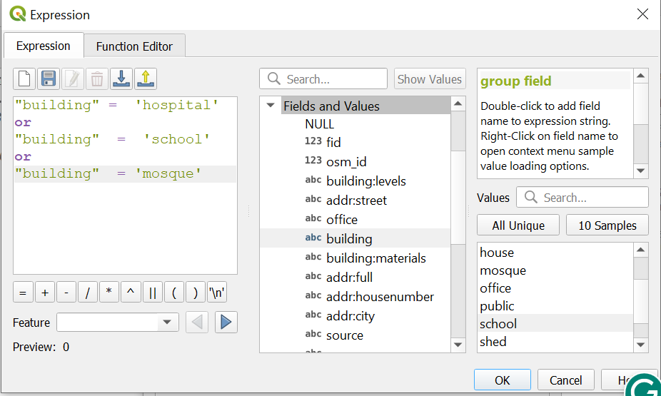
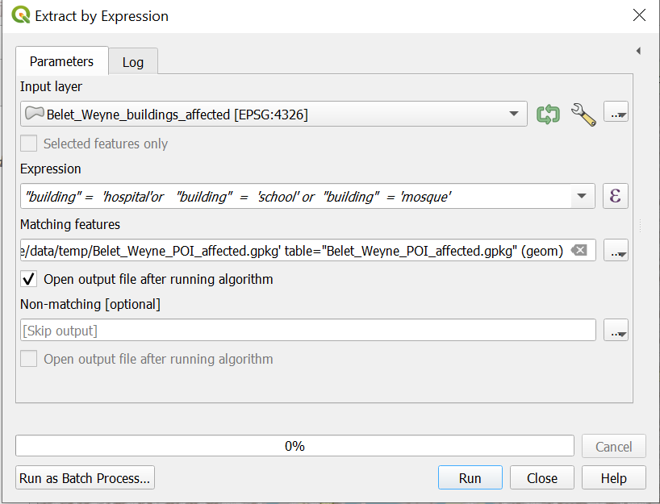

Exercise 3: Data Queries#
Aim of the exercise#
Links to Wiki articles#
Data#
Download all the datasets here, save the folder on your computer, and unzip the file. The zip folder includes:
som_admbnda_adm2_ocha_20230308.shp: This file contains information about the Somali administrative level 0-2, state, and operational zone level 1 and 2 boundary as shapefiles. The data can also be found on HDX.GF2_20231123_FloodExtent_BeledweyneCity_HiraanRegion.shp: This shapefile illustrates satellite-detected surface waters in Beledweyne City, Beledweyne District, Hiraan Region, Somalia, on 12th of November 2023 at 07:32 UTC. The data is also available on HDX.buildings_belet_weyne.geojson: This dataset is downloaded using HOT Export Tool and contains information about buildings in the Beledweyne district.
The folder is called Module_3_Exercise_3_Data_Queries and contains the entire standard folder structure with all data in the input folder.
Note
The naming of the districts and states is not consistent across the different datasets. You will find different spellings for the district name Beledweyne which we will be focusing on. Other spellings might be Belet Weyne or Belete Weyne. In many cases, you will have to edit the values in the datasets to remove different spelling of spelling mistakes. This process is called “data cleaning”.
Tasks#
Open QGIS and create a new project by clicking on
Project–>New.Once the project is created, save the project in the project folder of the exercise Module_3_Exercise_1_Queries_Somalia. To do that click on
Project–>Save asand navigate to the folder. Name the project Somalia_flood_affected_Beledweyne_2023.To load the following files into your project, drag and drop them (Wiki Video). Or click on
Layer–>Add Layer–>Add Vector Layer. Click on the three points and navigate to the file. Select the file and click
and navigate to the file. Select the file and click Open. Back in QGIS clickAdd(Wiki Video).som_admbnda_adm2_ocha_20230308.shpGF2_20231123_FloodExtent_BeledweyneCity_HiraanRegion.shpBuildings_Belete_Weyne.geojson: A pop-up window will appear for this file and you will need to decide which data to import. Select the polygons.
Tip
Make sure you unzip the exercise folder before loading the layers into QGIS. QGIS does not accept compressed files.
First, we want to export the district Beledweyne from the Hiraan region from
som_admbnda_adm2_ocha_20230308.shpto have it as a stand-alone vector layer. To do that:Open the attribute table of
som_admbnda_adm2_ocha_20230308.shpby right clicking on the layer –>Open Attribute Table(Wiki Video).Find the row of
Belet Weyneand mark it by clicking on the number on the very left-hand side of the attribute table. The row will be highlighted in blue and the district will turn yellow on the map canvas. You can right-click on the row and clickZoom to Feature(Wiki Video).Now right-click on the layer in the Layer Panel and click on
Export->Save Selected Features as. We want to save Beledweyne as a GeoPackage, so adjustFormataccordingly. Click on the three points and navigate to your temp folder. Here you can give the layer the name AOI_Beledweyne and clickSave. Now clickOK(Wiki Video). In this exercise, we will not reproject the layers and work with the data inESPG:4326 - WGS84.
In the following steps, we want to identify all buildings that are likely to be affected by the recent flooding. To do that we will use the tool
Extract by Location.In the
Processing Toolbox–> Search forExtract by LocationExtract features from: Buildings_Belete_Weyne.geojsonWhere the features (geometric predicate):are withinBy comparing to the features from: GF2_20231123_FloodExtent_BeledweyneCity_HiraanRegion.shpUnder
Extractedclick on the three points –> Save to File...and navigate to your temp folder and save the new layer under the name Beledweyne_buildings_affected and clickSave.Now click
RunAdjust your layers in a way that you only see the flooded areas and your new layer Beledweyne_buildings_affected. Remove the
som_admbnda_adm2_ocha_20230308.shpandBuildings_Belete_Weyne.geojsonlayer.
Attention
The tool
Select by Locationis very similar. This tool functions in the same way, but instead of directly extracting the features, it selects them.

The extract by extraction window in QGIS 3.36#
In the next step, we want to identify special buildings among the affected buildings. Open the attribute table and check what kind of buildings can be found in the layer. This information can be found in the column “building”. You can sort this column. To extract “hospitals”, “schools”, and “mosques”, we can use the tool
Extract by Expression.Find the tool
Extract by Expressionin theToolbox.Expression: click on .
.The window “Expression” will open. Here we can build a very specific query. In the central panel open
Field and values. Here you can see all the columns oft he the layer. Click onbuilding. On the right-hand side, you should now see the optionAll unique. Click on it. Here you can see now all unique values in the column „building“.In the
Expressionfield, enter the following expression (see the figure below):"building" = 'hospital' or "building" = 'school' or "building" = 'mosque'
Click
Ok. The window will close and you will see the expression you created in theExpression-field in theExtract by Expressionwindow (see figure below).Click
Run. A new temporary layer calledMatching Featureswill be added to your QGIS-project. Close theExtract by Expressionwindow.
{kind=link}

The expression window in QGIS 3.36 with an expression to extract the polygons with the “buildings” value ‘hospital’, ‘school’, and ‘mosque’.#
{kind=link}

The Extract by Expression window in QGIS 3.36#
Attention
A temporary layer will not be saved to your QGIS-project, even after saving the project. Temporary layers are marked by a  . In order to save the layer permanently, Right Click on the layer you wish to make permanent. Then, select the save location for the new layer. Make sure you to save it in the correct folder (see standard folder structure).
. In order to save the layer permanently, Right Click on the layer you wish to make permanent. Then, select the save location for the new layer. Make sure you to save it in the correct folder (see standard folder structure).
Explore the new layer by opening the attribute table, activating and deactivating the layer in the Layers panel.
Right Click on the
Matching Featureslayer and save it to your project folder under/data/output/with the nameBelet_Weyne_POI_affected.gpkg.
Congratulations! The extracted information can now be used to perform further analyses or create comprehensive maps of the affected points of interest.